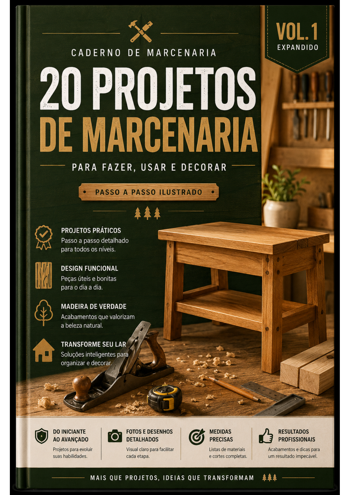

Medidas prontas
Dimensões organizadas para facilitar cortes, montagem e conferência.
Tenha em mãos 40 projetos completos, com medidas, listas de materiais e instruções ilustradas para transformar madeira em peças úteis, bonitas e funcionais.
Compra segura • material digital • acesso após a confirmação
Pesquisar vídeos soltos, salvar referências e tentar juntar tudo sozinho costuma gerar desperdício, retrabalho e frustração. A Biblioteca da Marcenaria organiza o caminho, do planejamento ao acabamento.
Dimensões organizadas para facilitar cortes, montagem e conferência.
Saiba o que comprar antes de começar e reduza desperdícios.
Acompanhe cada etapa visualmente, sem depender de explicações vagas.
Valorize suas peças com orientações simples para um resultado mais profissional.
Crie soluções para sala, quarto, entrada, escritório e organização da casa.
Comece com projetos acessíveis e avance para peças mais completas.

Projetos práticos para fazer, usar e decorar, com foco em quem quer começar construindo peças reais.
Uma evolução visual e técnica, com projetos detalhados, organização por etapas e acabamento editorial premium.
Você não precisa ter uma oficina completa nem anos de experiência. A coleção foi pensada para iniciantes, hobbyistas e pessoas que desejam construir móveis com mais clareza e confiança.
Uma biblioteca digital para consultar no celular, tablet ou computador sempre que surgir vontade de construir.
Caso a coleção não faça sentido para você, basta solicitar o reembolso dentro do prazo previsto. Sem oficina de obstáculos.
Não. Os dois volumes são digitais e podem ser acessados em celular, tablet ou computador.
Sim. A coleção começa com projetos acessíveis e apresenta medidas, materiais e etapas de forma visual.
Não. Cada projeto informa o que será necessário, permitindo que você escolha peças compatíveis com sua estrutura atual.
O acesso é enviado após a confirmação do pagamento, conforme o fluxo configurado no seu checkout.